Э 1. Подготовка
На данном этапе вы создаете скелет вашей будущей презентации — содержание.
Вступление
Тетичеореская часть
Практическая часть
Заключение
С одной стороны, вам придется соблюсти официальные требования, а с другой
— сформировать запоминающуюся историю и усилить ее хорошей визуализацией.
Вступление
актуальность работы
объект и предмет исследования
проблематика и цели
Теоретическая часть
научные теории
модели
понятия
термины
Практическая часть
результаты, полученные в ходе исследований или работы
методы
собственные выводы
Заключение
ключевые выводы
собственные заключения
возможности практического применения и развития данного труда
Указатели
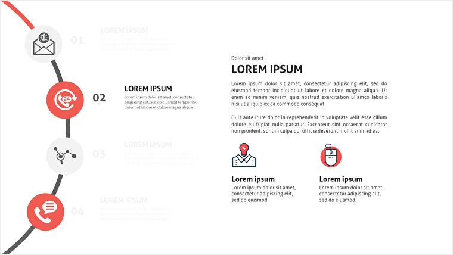
Источник:
https://graphicriver.net/item/ammay-multipurpose-business-google-slides/20085039
Указатели позволят слушателю ориентироваться в ходе рассказа, понимать, на какой стадии
презентации сейчас находится докладчик, и знать, какие темы остались еще не раскрыты.
Титульный слайд
ФИО студента
ФИО руководителя
название учебного заведения
тема работы
название специальности
год и город
суть работы
Начало презентации — самый трудный и ответственный этап.
Цветовая палитра
Выбор цветовой палитры — один из самых сложных этапов дизайна презентации.Coolors генерирует палитру из 5 цветов
Генераторы позволяют быстро получить интересные цветовые сочетания и
определиться со стилистикой презентации.
Цветовое колесо
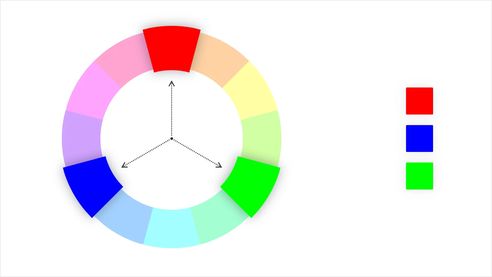
Наиболее гибкий инструмент для создания цветовых палитр, которые используют
профессиональные дизайнеры. Такие сервисы, как Adobe Color позволяют легко подбирать
разнообразные палитры при помощи правил сочетаемости цветов.
Грамотно подобранная цветовая палитра сделает презентацию яркой и интересной.
Пример титульного слайда
Источник:
https://creativemarket.com/ShapeSlide/2261492-CRYPTO-Powerpoint-Template
Хороший прием — использование монохромных изображений:
Конечно, полноцветные фотографии тоже можно использовать. Но желательно, чтобы
они не были слишком
пестрыми. Хорошо подходят изображения в сближенных тонах с низкой контрастностью.
Привлекаем внимание к проблеме
Задача второго слайда — удержать внимание аудитории.
Дизайн должен подчиняться единому шаблону: если вы на первом и втором слайде
будете использовать разные цвета, шрифты и графические приемы, это дезориентирует слушателей.
Обозначьте тему выступления на титульном слайде.
Сделайте дизайн первого слайда лаконичным, чтобы привлечь внимание к заголовку.
На втором слайде обозначьте основные тезисы и соблюдайте тот же стиль оформления, что и для
титульного слайда.
Если вы хотите начать выступление с шутки или мема, этот ход должен быть оправданным.
Старайтесь, чтобы креатив не рассеял внимание зрителей, а, напротив, помог им
лучше понять тему выступления.
Разделительные слайды
Разделители — важный элемент любой презентации.
Для слушателя это способ понять, что одна секция заканчивается и начинается следующая, для
докладчика — время, чтобы сделать выводы по прошлой части и перейти к новой.
Разделители обозначают начало новой части выступления, и визуально, как
титульный лист, передают ключевую идею вашего рассказа.
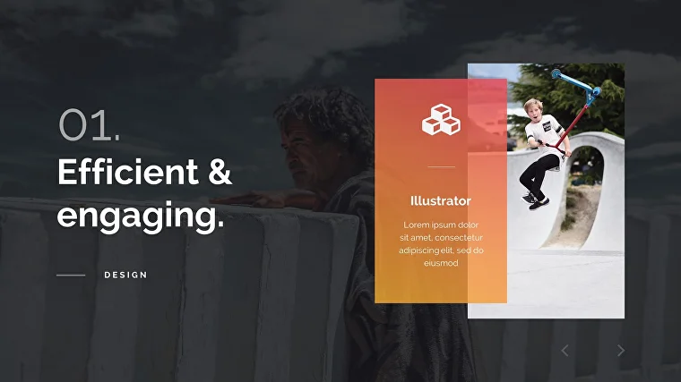
Источник:
https://graphicriver.net/item/drop-creative-powerpoint-template/21215502?_ga=2.55771755.1925730784.1560245264-163228539.1560245264
Этап 2. Основные слайды
Основная часть информации с помощью текста.
После того, как вы сформировали скелет презентации, сделали указатели, нашли
идеальные изображения для титульных и разделительных листов, пришло время для оформления
основных слайдов работы.
Заголовки и текст
Заголовки несут в себе основной смысл слайда.
Источник:
https://creativemarket.com/ShapeSlide/2261492-CRYPTO-Powerpoint-Template
Вместо назывных заголовков (например, «Сравнение компаний»), лучше использовать
действенные: «Компания Apple лидирует по прибыли среди крупнейших производителей смартфонов».
Иконки
Используйте иконки для визуализации содержания ваших текстовых блоков.
Они ускоряют восприятие информации, поскольку считываются быстрее текста,
хорошо запоминаются и помогают акцентировать внимание на ключевых моментах.
Иконки используют в презентации для:
Для структурирования информации
Для наглядной визуализации
Для создания уникального стиля
Для структурирования информации
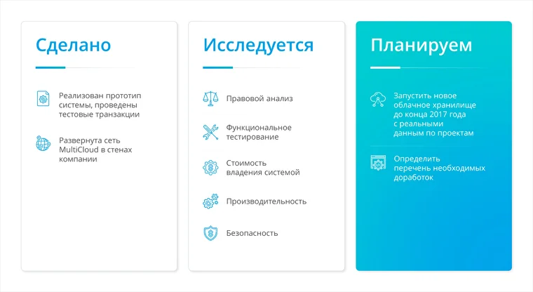
В тексте иконки работают как маяки: привлекают внимание, «ведут» аудиторию,
постепенно погружая в информацию.
Для наглядной визуализации
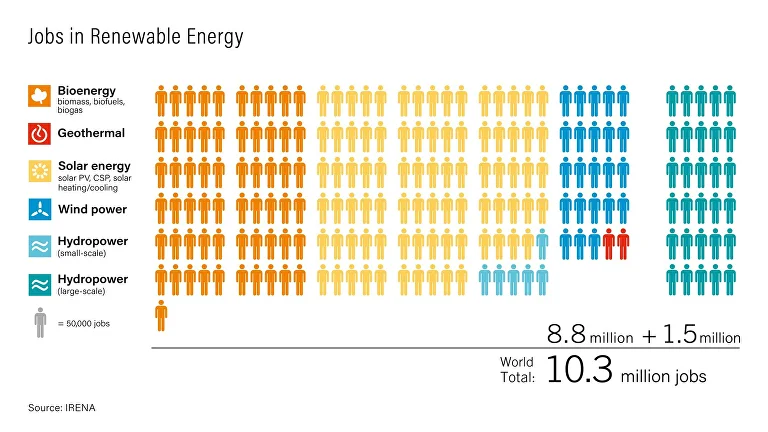
Источник: https://delealalengua.com/2019/01/29/
conversacion-el-cambio-climatico-i/
Цель инфографики — компактно представить большой объем информации в виде
полноценного визуального сюжета. Иконки используются в качестве составных частей графиков,
способны заменять абзацы и удобны для разбиения инфографики на разделы.
Для создания уникального стиля
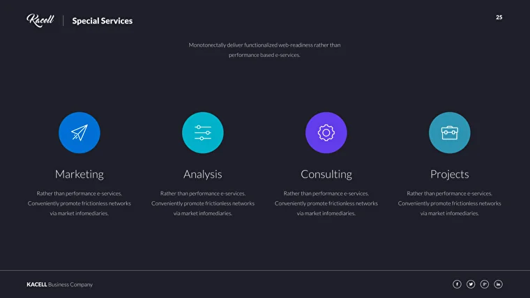
Источник:
https://graphicriver.net/item/kacell-multipurpose-business-template-keynote/21235934
С помощью иконок можно сделать запоминающийся стиль слайда.
Иконки делятся на:
монохромные
контурные
разной заливки цветом
плоские
объемные
Правила использования иконок
Не используйте в одной презентации иконки разных типов
Лучше придерживаться одного выбранного стиля
Иконки на слайде должны быть визуально равнозначными — так чище и аккуратнее.
Простота визуализации
Иконка должна соответствовать тексту и быть узнаваемой.
Формат SVG
Это будет бросаться в глаза и создаст впечатление некачественной работы.
Если контурные иконки не из одного набора (pack), их стиль может
отличаться (толщина линий, скругления углов, цветовая палитра и т.д.).
Чаще всего иконки отрисованы с равными высотой и шириной: 8×8, 16×16, 32×32 пикселя.
Чем меньше в иконке элементов, тем легче и быстрее она идентифицируется.
Используйте недвусмысленные иконки, или подписывайте их.
SVG иконки можно увеличивать или уменьшать, при этом качество изображения не ухудшится,
в отличие от растровых картинок JPEG / PNG.
Фотографии
Используйте изображения высокого разрешения и указывайте их источник.
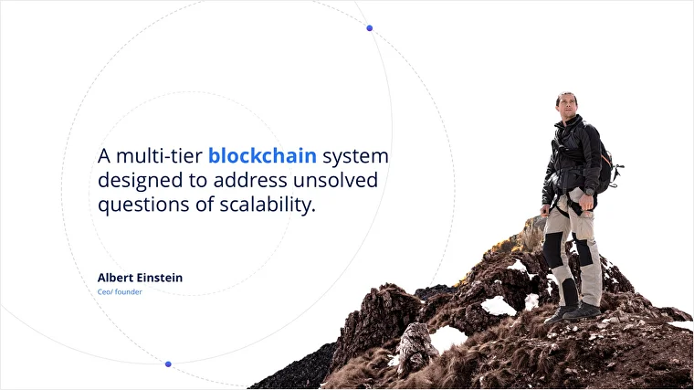
Источник:
https://creativemarket.com/ShapeSlide/2261492-CRYPTO-Powerpoint-Template
Текст
При работе с текстом на слайдах презентации стоит соблюдать следующие правила:
Использовать крупный кегль (размер) шрифта — от 20 пунктов
Использовать единые шрифтовые пары
Старайтесь помещать на слайды только ключевую информацию, ваши заголовки должны быть не
длиннее двух строк
Информация должна быть хорошо видна аудитории и легко читаться.
Не нужно пытаться удивить своим креативом на каждом слайде. Возьмите максимум два типа
шрифта: один для титульного листа и разделителей, другой — для основного
содержания.
Какими бывают шрифты
Гарнитура — это семейство шрифтов.
жирное
полужирное
обычное
тонкое
курсивное
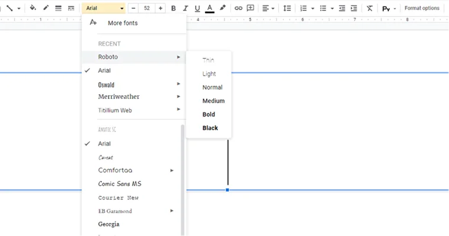
Roboto — это гарнитура, а Roboto Bold — шрифт
Самый простой способ отделить заголовок от абзацев текста — выбрать два контрастных шрифта
из одной гарнитуры.
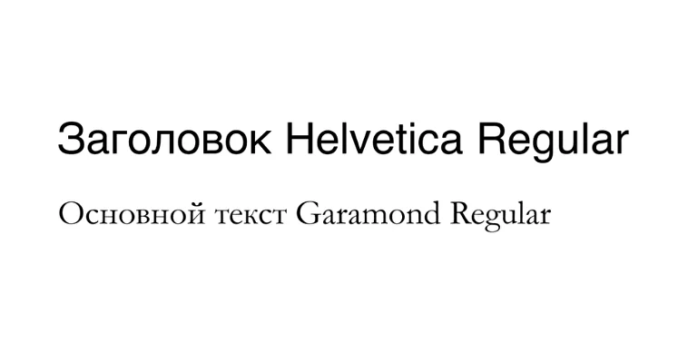
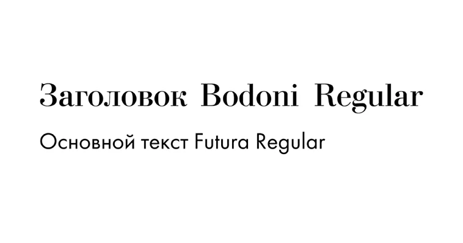
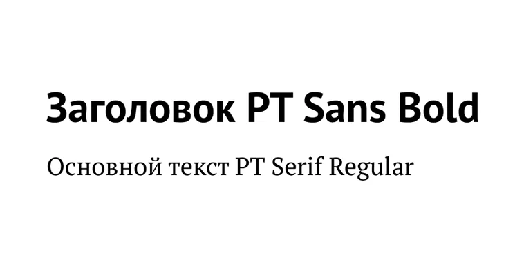
Правила сочетания
Характеристики, по которым можно комбинировать шрифты из разных групп:
По общности пропорций
По сходству формы букв
По апертуре (степени открытости знаков)
Широкие буквы или узкие, одинаковая ли ширина у всех букв в шрифте или разная, насколько
большие расстояния между символами.
Много ли в буквах острых углов или плавных линий, насколько штрихи прямые или изогнутые
Взгляните, например, на букву «с» – она больше похожа на полукруг или на незамкнутый
круг. Так можно сделать вывод о степени открытости букв.
Данные
Практическая часть работы почти всегда включает множество данных.
Таблицы
Графики и диаграммы
Лучшее применение таблиц — сравнение нескольких продуктов/компаний/услуг
по различным параметрам.
Таблицы
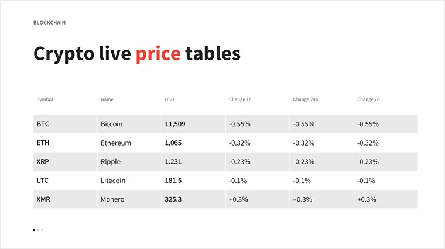
Источник:
https://graphicriver.net/item/blockchain-powerpoint-template/21826986
позволяют сравнивать большое количество информации по различным параметрам. Но
часто таблицами злоупотребляют, пытаясь разместить всю историю на одном слайде.
Графики и диаграммы
Не более чем два графика на слайде.
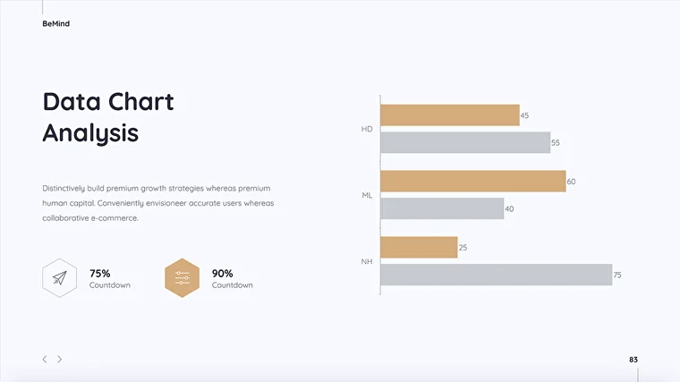
Сосредоточьтесь на самой важной информации, которая поддержит ваш рассказ. И ,
чтобы не заставлять аудиторию делать их самостоятельно.